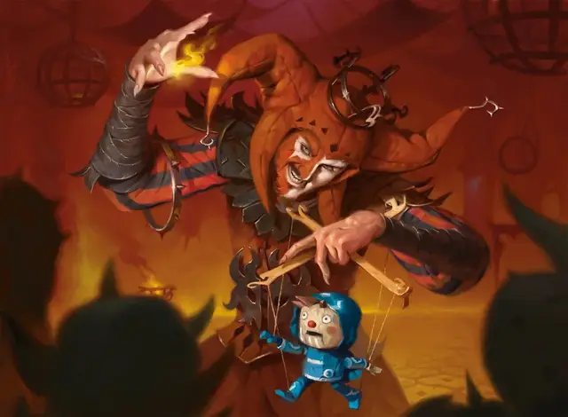

Ракдос-памфлетист
Rakdos Lampooner
Средний Гуманоид (Любая раса), хаотично-злой

Класс Доспеха 12 (кожаный доспех)
Хиты 27 (5к8 + 5)
Скорость 30 футов
| мод | спас | ||
|---|---|---|---|
| СИЛ | 11 | +0 | +0 |
| ЛОВ | 12 | +1 | +1 |
| ТЕЛ | 13 | +1 | +1 |
| мод | спас | ||
|---|---|---|---|
| ИНТ | 12 | +1 | +1 |
| МДР | 9 | −1 | −1 |
| ХАР | 18 | +4 | +4 |
Навыки Выступление +6, Обман +6
Чувства пассивное Восприятие 9
Языки Общий, плюс один другой язык
Опасность 2 (450 опыта)
Бонус мастерства +2
Особенности
Использование заклинаний. Памфлетист является заклинателем Ракдосов 4-го уровня. Его базовой характеристикой заклинаний является Харизма (Сл спасброска от заклинания 14, +6 к попаданию атаками заклинаниями). Он знает следующие заклинания барда:
• Заговоры (неограниченно): пляшущие огоньки [dancing lights], малая иллюзия [minor illusion], злая насмешка [vicious mockery];
• 1 уровень (4 ячейки): порча [bane], диссонирующий шёпот [dissonant whispers], безмолвный образ [silent image], жуткий смех Таши [tasha's hideous laughter], волна грома [thunderwave];
• 2 уровень (3 ячейки): корона безумия [crown of madness], речь златоуста [enthrall], внушение [suggestion].
Действия
Дубинка. . Рукопашная атака оружием: +2 к попаданию, досягаемость 5 фт., одна цель. Попадание: 2 (1к4) дробящего урона.
Описание
Одним из наиболее эффективных видов оружия в арсенале культа Ракдосов является сатира, и ракдос-памфлетист— виртуоз в этом искусстве. Памфлетист обычно приберегают свои насмешки для людей и гильдий, захвативших огромную власть, тех, кого нужно сбросить с крючка, вместо того, чтобы подвергать еще большему унижению тех, кто уже борется. Они используют маски, марионетки или чучела, чтобы карикатурно изображать общественных деятелей, а иногда и разыгрывают этих людей прямо на улицах.